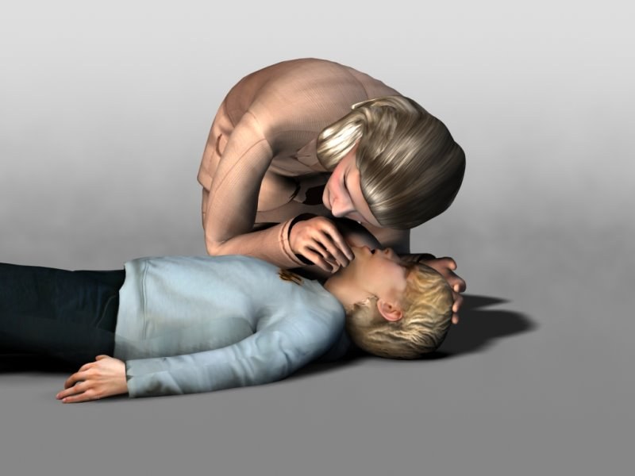
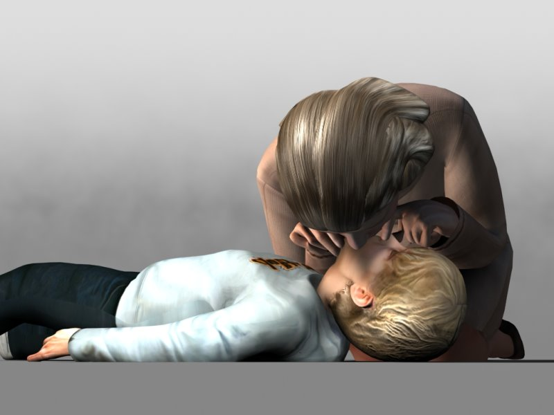
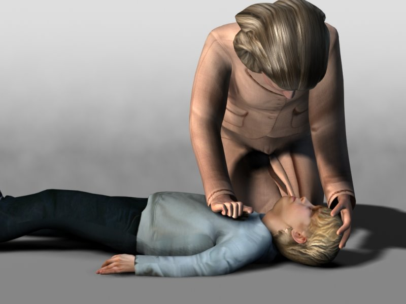

TEMELJNI POSTOPKI OŽIVLJANJA OTROKA (od enega leta do pubertete)
1. Zagotovi varnost reševalca in dojenčka.
2. Preveri otrokovo odzivnost: nežno ga pocukaj, uščipni in glasno vprašaj: "Ali si v redu?"
3. Če se otrok odzove z govorom ali premikanjem:
- pusti otroka v položaju, v katerem je bil najden (če ni kakorkoli ogrožen
- preveri njegovo stanje in po potrebi poišči pomoč
- redno ocenjuj njegovo stanje
3.1 Če se otrok ne odzove:
- pokliči pomoč
- previdno ga obrni na hrbet
- sprosti njegovo dihalno pot z vzvračanjem glave in dvigom brade
- ne pritiskaj na mehka tkiva pod brado, saj lahko zapreš dihalno pot
Če imaš še vedno težave z odpiranjem dihalne poti, poskusi s potiskom čeljusti naprej: položi palec in kazalec obeh rok na vsako stran otrokove spodnje čeljustnice in potisni čeljust naprej.
4. Med vzdrževanjem odprte dihalne poti glej, poslušaj, občuti normalno dihanje s približevanjem obraza k otrokovemu obrazu in z opazovanjem prsnega koša:
- opazuj premike prsnega koša
- poslušaj pri nosu in ustih njegovo dihanje
- zaznaj izstopanje izdihanega zraka ob licu

Slika 4: Sprostitev dihalne poti pri otroku in ocena dihanja
Za oceno dihanja porabi deset sekund. V prvih minutah po srčnem zastoju lahko otrok počasi in neredno lovi sapo. Če dvomiš o tem, ali je dihanje normalno, ukrepaj, kot da ne diha.
5. Če otrok diha normalno:
- ga obrni v stabilni bočni položaj
- pošlji nekoga po pomoč in pokliči 112
- ves čas opazuj dihanje in spremembe stanja
5.1 Če dihanje ni normalno ali otrok ne diha:
- previdno odstrani vse vidne tujke
- daj začetnih pet vpihov
Vpihi za otroka po prvem letu:
- vzvrni glavo in dvigni brado
- stisni mehki del nosu s palcem in kazalcem roke, ki je na čelu
- usta naj bodo odprta, vendar vzdržuj dvignjeno brado
- vdihni in položi svoje ustnice okrog otrokovih ust, pazi, da bo stik dobro tesnil
- vpihuj enakomerno v usta sekundo do sekunde in pol, pri čemer opazuj dvigovanje prsnega koša
- vzdržuj vzvrnjeno glavo in dvignjeno brado, odmakni usta od otrokovih in opazuj spuščanje prsnega koša med izdihom
- ponovno vdihni in petkrat ponovi to zaporedje. Oceni učinkovitost umetnega dihanja z uspešnim dvigovanjem in spuščanjem prsnega koša, kot je to med normalnim dihanjem

Slika 5: Umetno dihanje pri otroku
6. Oceni otrokov krvni obtok
Ne porabi več kot deset sekund za preverjanje življenjskih znakov – ti vključujejo vsakršen premik, kašljanje ali normalno dihanje (nenormalno lovljenje sape ali redke neredne vdihe).
7. Če otrok ne zadiha, se ne premakne (znaki krvnega obtoka) ali pa nisi prepričan, da so znaki krvnega obtoka prisotni, začni zunanjo masažo srca in umetno dihanje v razmerju 30:2.
Tehnika masaže srca pri otroku po prvem letu:
Pri večjem otroku se glede na njegovo telesno zgradbo odločimo, ali bomo začeli zunanjo masažo srca z eno roko (peta ene dlani) ali z obema rokama kot pri odraslem. Mesto za masažo srca je širina enega prsta nad žličko. Glavni poudarki so doseganje zadostnega števila srčnih masaž na minuto, ustrezna globina vtisa in minimalno prekinjanje srčne masaže. Opraviti je treba 100 do 120 srčnih masaž na minuto. Razmerje zunanje masaže srca in umetnega dihanja je 30:2, priporočena globina posamezne masaže je pri otrocih pet centimetrov, kar pomeni, da je treba doseči pritisk ene tretjine globine prsnega koša pri posameznem vtisu.

Slika 6: Zunanja masaža srca pri otroku
8. Oživljamo, dokler otrok ne pokaže znakov življenja (spontano dihanje, pulz, premikanje), dokler ne prispe strokovna ekipa ali dokler se ne utrudimo.
Posnetek TPO za otroka: klikni tukaj
Kdaj pokličemo 112?
Če je pri oživljanju otroka prisotnih več reševalcev, je treba nujno medicinsko pomoč poklicati takoj. Če pa oživljamo otroka sami, najprej eno minuto oživljamo, nato pokličemo nujno pomoč. Edina izjema pri tem pravilu enominutnega oživljanja pred klicem pomoči je, da smo zagotovo prepričani, da je vzrok kolapsa smrtno nevarna motnja srčnega ritma (prirojena srčna napaka, nenaden kolaps, poškodba z električnim tokom). V tem primeru takoj, ko ugotovimo neodzivnost in odsotnost dihanja, pokličemo njuno pomoč na številko 112.